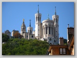
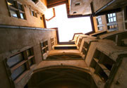
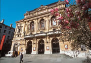

WE PROMO
Lyon
22-23septembre 2018
| |
| Accueil |
| Circuit Historique et églises |
| Reportage photos |
| Contact et Programme |
| La colline histoire et églises | Allez en Métro Ligne D jusqu'à Vieux Lyon, Prendre le Funiculaire ligne Saint-just et Sortez à :Minimes, traversez la rue en montant à gauche: | Théatre romain: Traverser le et sortez par le haut, prendre à gauche rue Roger Radisson jusqu'à la rue du cardinal Gerlier, prendre cette rue à droite
Vous arrivez devant la porte du Cimetière loyasse ( à visiter si ouvert, observez les Croix, bustes, chapelles....)
En ressortant du cimetière, continuer toujours la Rue du cardinal Gerlier, jusqu'à la place du 158ème RI et prendre direction Basilique fourvière
En fin la Balade Bucolique : Traverser le parc des hauteurs et la Passerelle des quatres vents .
A la sortie du parc, observez à gauche le '3ème étage de la tour-eiffel' (les lyonnais sont radins alors ils n'ont fait directement que le 3ème étage en 1894), le sommet est à 372m (356m pour la Tour Eiffel) et la tour mesure 86m, prendre à droite et vous arrivez à la basilique de Fourvière : il y a 2 églises (Haute et Basse) qui sont très différentes…. Prendre La longue descente à gauche de la basilique et traversez les jardins (ne vous arrêtez pas aux Arts et Métiers, ce n'est qu'une pâle copie de notre belle école….) Arrivé sur la Montée Saint-barthélémy, prendre le premier long escalier à droite (montée des chazeaux) Prendre à gauche rue du bœuf (flanés et regarder l'architecture…….), allez jusqu'au 16 rue du Bœuf et entrez…. Retournez sur à la place Neuve Saint-Jean (observé l'animal….) et descendez jusqu'à la Rue Saint-jean et tournez à Droite en direction de la cathédrale Saint-jean Profitez du quartier pour observer, rentrez dans les traboules ouvertes ( ou essayer d'en trouver) Arrivée à la cathédrale Saint-Jean: entrez, allez à droite voir les 'trésors', puis allez au fond de la cathédrale, à gauche et Observez cette fabuleuse Horloge Astronomique (plus en état pour l'instant depuis un sabotage….) Sortez à gauche de la Cathédrale Suivant votre timing: Le métro est à 100m (à droite), où pour les courageux à gauche, Traverser la Saône et allez jusqu'à la Place Bellecour (Métro sur la place) |
 |
Ne manquez pas la colline de Fourvière, le Vieux Lyon, et la Presqu’île. Reconnus comme témoignage exceptionnel de la continuité urbaine en 2000 ans, ils font partie des 500 ha inscrits au patrimoine de l’humanité par l’UNESCO. Prenez le funiculaire pour monter sur la colline de Fourvière. De l’esplanade de la basilique, une vue unique vous permet d’appréhender d’un coup d’œil panoramique la deuxième ville de France. Non loin de la basilique dans les théâtres romains de Fourvière. |
Au pied de la colline, promenez-vous dans le Vieux Lyon, le quartier Renaissance. Il s'étend de l’église Saint Georges à celle de Saint Paul en passant par l’incontournable cathédrale Saint Jean. Flânez dans le lacis des traboules et admirez les magnifiques cours intérieures, galeries à la française, puits et escaliers en colimaçon. Traversez la Saône sur la passerelle du Palais de Justice... |
 |
|  | Arpentez la Presqu’île : de la fameuse Place Bellecour à celle des Terreaux, en passant par le « carré d’Or » pour un shopping de luxe agréable. Bâtiments emblématiques et musées jalonnent ce quartier : Abbaye d’Ainay, Hôtel Dieu, Théâtre des Célestins, Musées de l’imprimerie, des Beaux Arts, Eglise St Nizier, Hôtel de Ville et Opéra entre autres. |